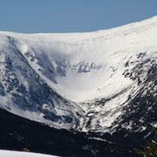
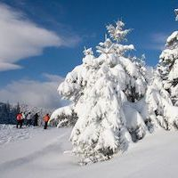
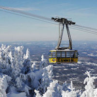

Living in Lisbon with my fiancée Danielle. Learning to code at Le Wagon. Thanks, Ethereum! Interested in learning how to code?
LEARN MORE|  | Tuckermans RavineTuckerman Ravine is a glacial cirque sloping eastward on the southeast face of Mt. Washington, in the White Mountains of New Hampshire. There is no lift.. you have to climb. |
|  | Sunday RiverSunday River is a ski resort located in Newry, Maine, in the United States. It is one of Maine's largest and most visited ski resorts. Its vertical drop of 2,340 feet is the second largest in Maine and the sixth largest in New England. |
|  | Cannon MountainCannon Mountain Ski Area is a state-owned ski resort located on Cannon Mountain in the White Mountains of New Hampshire, United States. Cannon is located within Franconia Notch State Park and offers 10 lifts servicing 265 acres of skiing. |